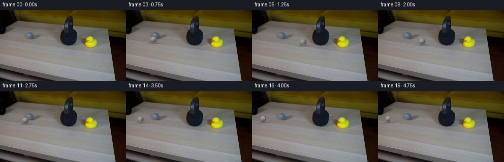
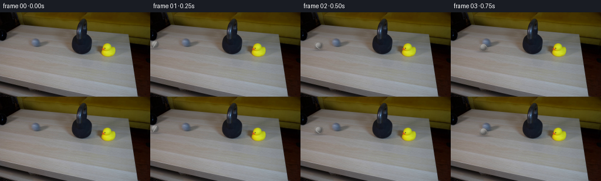

CODING AGENTS AS PIXEL WORLD MODELS
traex/GPT-5.6-Sol · 0198
点击播放 · 原生 RGB 像素
逐轮保存的候选
回放视频、检查图与代码变化。
每份候选均可单独播放。实际图片检查记录在下方工具轨迹中。
候选 01播放与检查图
点击播放 · 原生 RGB 像素


展开代码变化
--- 上一保存版本
+++ 本次保存版本
@@ -0,0 +1,129 @@
+from pathlib import Path
+
+import cv2
+import numpy as np
+from PIL import Image
+
+import artifact_io
+
+
+CASE_DIR = Path(__file__).resolve().parent
+N_FRAMES = 20
+
+
+def composite_shadow(image, cx, ground_y, radius, velocity):
+ """A small, soft contact shadow anchors the ball to the table."""
+ h, w = image.shape[:2]
+ yy, xx = np.mgrid[0:h, 0:w]
+ sx = radius * 1.20 + min(abs(velocity) * 0.025, 0.75)
+ sy = 1.15
+ density = np.exp(-0.5 * (((xx - cx) / sx) ** 2 + ((yy - ground_y) / sy) ** 2))
+ alpha = (0.31 * density)[..., None]
+ # The shadow is neutral rather than pure black, preserving some wood texture.
+ image[:] = image * (1.0 - alpha) + np.array([24.0, 24.0, 23.0]) * alpha
+
+
+def composite_ball(image, cx, cy, radius_x, radius_y, phase, velocity):
+ """Render a shaded, slightly fuzzy grey tennis ball with a rotating seam."""
+ scale = 4
+ pad = 3
+ x0 = max(0, int(np.floor(cx - radius_x - pad)))
+ x1 = min(image.shape[1], int(np.ceil(cx + radius_x + pad + 1)))
+ y0 = max(0, int(np.floor(cy - radius_y - pad)))
+ y1 = min(image.shape[0], int(np.ceil(cy + radius_y + pad + 1)))
+ if x1 <= x0 or y1 <= y0:
+ return
+
+ # Supersampling gives a clean silhouette at the very small ball size.
+ hs, ws = (y1 - y0) * scale, (x1 - x0) * scale
+ yy, xx = np.mgrid[0:hs, 0:ws]
+ px = x0 + (xx + 0.5) / scale
+ py = y0 + (yy + 0.5) / scale
+ nx = (px - cx) / radius_x
+ ny = (py - cy) / radius_y
+ rr = nx * nx + ny * ny
+ inside = rr <= 1.0
+ nz = np.sqrt(np.maximum(0.0, 1.0 - rr))
+
+ # Soft directional illumination from the upper left, matching the source frame.
+ light = np.array([-0.52, -0.68, 0.52], dtype=np.float32)
+ light /= np.linalg.norm(light)
+ diffuse = np.maximum(0.0, nx * light[0] + ny * light[1] + nz * light[2])
+ rim = np.clip(nz / 0.23, 0.0, 1.0)
+ level = 76.0 + 73.0 * diffuse + 18.0 * nz
+ rgb = np.stack((level * 1.01, level, level * 0.985), axis=-1)
+
+ # A tennis-ball seam represented by a great-circle arc. Its changing direction
+ # makes the no-slip rolling visually legible despite the low output frame rate.
+ seam_normal = np.array(
+ [np.cos(phase), 0.58, np.sin(phase)], dtype=np.float32
+ )
+ seam_normal /= np.linalg.norm(seam_normal)
+ seam_distance = np.abs(
+ nx * seam_normal[0] + ny * seam_normal[1] + nz * seam_normal[2]
+ )
+ seam = inside & (seam_distance < 0.105) & (nz > 0.08)
+ seam_mix = np.clip((0.105 - seam_distance) / 0.065, 0.0, 1.0)[..., None]
+ seam_color = np.array([181.0, 181.0, 176.0])
+ rgb = rgb * (1.0 - seam_mix * seam[..., None]) + seam_color * seam_mix * seam[..., None]
+
+ # Fine deterministic mottling suggests the nap of a tennis ball without flicker.
+ texture = (
+ np.sin(px * 5.17 + py * 2.31 + phase * 0.17)
+ + np.sin(px * 1.91 - py * 4.73 - phase * 0.11)
+ ) * 2.2
+ rgb += texture[..., None]
+
+ # A tiny exposure blur elongates only the silhouette in the travel direction.
+ speed_blur = min(abs(velocity) * 0.018, 0.45)
+ edge_alpha = np.clip((1.035 + speed_blur - np.sqrt(rr)) / 0.055, 0.0, 1.0)
+ edge_alpha *= inside | (rr < (1.035 + speed_blur) ** 2)
+ # Keep vertical edges tighter than horizontal edges.
+ edge_alpha *= np.clip((1.045 - np.abs(ny)) / 0.055, 0.0, 1.0)
+ edge_alpha *= np.clip(rim + 0.30, 0.0, 1.0)
+ rgb = np.clip(rgb, 0, 255)
+
+ rgb_small = cv2.resize(rgb.astype(np.float32), (x1 - x0, y1 - y0), interpolation=cv2.INTER_AREA)
+ alpha_small = cv2.resize(edge_alpha.astype(np.float32), (x1 - x0, y1 - y0), interpolation=cv2.INTER_AREA)[..., None]
+ patch = image[y0:y1, x0:x1]
+ patch[:] = patch * (1.0 - alpha_small) + rgb_small * alpha_small
+
+
+def make_frames():
+ first = np.asarray(Image.open(CASE_DIR / "first_frame.png").convert("RGB"), dtype=np.uint8)
+ if first.shape != (144, 256, 3):
+ raise ValueError(f"unexpected first-frame shape: {first.shape}")
+
+ # Frame 0 remains untouched. The ball emerges from the left pipe, strikes the
+ # essentially immovable 30 lb bell at x~=122, then rebounds and loses energy.
+ x_positions = np.array(
+ [-8.0, 8.0, 31.0, 56.0, 81.0, 104.0, 117.1,
+ 105.0, 90.0, 76.0, 63.0, 52.0, 43.0, 35.5,
+ 29.8, 25.7, 23.0, 21.6, 21.0, 21.0],
+ dtype=np.float32,
+ )
+ frames = [first.copy()]
+ for index in range(1, N_FRAMES):
+ x = float(x_positions[index])
+ velocity = float(x_positions[index] - x_positions[index - 1])
+ # Perspective line on the tabletop leading exactly to the kettlebell.
+ y = 54.0 + 0.1045 * x
+ rx, ry = 5.8, 5.8
+ if index == 6: # momentary elastic compression against the iron bell
+ rx, ry = 4.9, 6.45
+
+ frame = first.astype(np.float32).copy()
+ ground_y = y + ry + 1.15
+ composite_shadow(frame, x, ground_y, max(rx, 5.4), velocity)
+ phase = (x - 8.0) / 5.8
+ composite_ball(frame, x, y, rx, ry, phase, velocity)
+ frames.append(np.clip(np.rint(frame), 0, 255).astype(np.uint8))
+
+ result = np.stack(frames, axis=0)
+ # Contract-critical guarantee, independent of all rendering arithmetic above.
+ result[0] = first
+ return result
+
+
+if __name__ == "__main__":
+ artifact_io.save(make_frames(), CASE_DIR)
可观测工具轨迹
实际执行的命令与返回图片。
命令 1exit 0
/bin/bash -lc "cat prompt.txt && printf '\\n---RULES---\\n' && cat GENERATION_RULES.md"
命令 2exit 127
/bin/bash -lc "find . -maxdepth 2 -type f -printf '%p\\n' | sort && printf '\\n--- image metadata ---\\n' && file first_frame.png"
命令 3exit 0
/bin/bash -lc "python - <<'PY'
from PIL import Image
import numpy as np
im=np.array(Image.open('first_frame.png').convert('RGB'))
print(im.shape,im.dtype, im.min((0,1)),im.max((0,1)), im.mean((0,1)))
# exact most common colors
u,c=np.unique(im.reshape(-1,3),axis=0,return_counts=True)
for i in np.argsort(c)[-20:][::-1]: print(c[i],u[i])
PY"命令 4exit 0
/bin/bash -lc "sed -n '1,240p' artifact_io.py"
命令 5exit 0
/bin/bash -lc "python - <<'PY'
try:
import cv2; print('cv2',cv2.__version__)
except Exception as e: print('no cv2',e)
try:
import scipy; print('scipy',scipy.__version__)
except Exception as e: print('no scipy',e)
PY"命令 6exit 0
/bin/bash -lc "python - <<'PY'
import cv2, numpy as np
from PIL import Image
im=cv2.imread('first_frame.png'); lab=cv2.cvtColor(im,cv2.COLOR_BGR2LAB)
# kmeans pixels to 12 colors deterministic
x=lab.reshape(-1,3).astype(np.float32)
cv2.setRNGSeed(2)
_,z,c=cv2.kmeans(x,12,None,(cv2.TERM_CRITERIA_EPS+cv2.TERM_CRITERIA_MAX_ITER,100,.2),10,cv2.KMEANS_PP_CENTERS)
z=z.reshape(144,256)
rgb=cv2.cvtColor(c.astype(np.uint8)[None],cv2.COLOR_LAB2RGB)[0]
# order labels by luminance, print centers
order=np.argsort(rgb.mean(1)); chars=' .:-=+*#%@ABCDEFGHIJKLMNOPQRSTUVWXYZ'
mp={int(v):chars[i] for i,v in enumerate(order)}
print([(mp[i],rgb[i].tolist(),int((z==i).sum())) for i in range(12)])
# majority each block 4x4 => 64x36
for y in range(0,144,4):
s=''
for xx in range(0,256,4):
a=z[y:y+4,xx:xx+4].ravel(); q=np.bincount(a,minlength=12).argmax(); s+=mp[q]
print(s)
PY"命令 7exit 0
/bin/bash -lc "python - <<'PY'
from PIL import Image
import numpy as np, cv2
im=np.array(Image.open('first_frame.png').convert('RGB'))
# masks / comps utility
conds={
'yellow':(im[:,:,0]>120)&(im[:,:,1]>105)&(im[:,:,2]<70)&(im[:,:,0]>im[:,:,2]*2),
'brightyellow':(im[:,:,0]>170)&(im[:,:,1]>150)&(im[:,:,2]<80),
'black':np.max(im,2)<35,
'dark':np.mean(im,2)<45,
'neutral_dark':(np.max(im,2)-np.min(im,2)<20)&(np.mean(im,2)<80),
'gray':(np.max(im,2)-np.min(im,2)<18)&(np.mean(im,2)>60)&(np.mean(im,2)<160),
}
for n,m in conds.items():
num,L,st,cent=cv2.connectedComponentsWithStats(m.astype('uint8'),8)
print('\\n',n,'pixels',m.sum())
idx=np.argsort(st[1:,4])[::-1][:15]+1
for i in idx:
if st[i,4]>=3: print(st[i].tolist(),np.round(cent[i],1).tolist())
# stats in 16x12 tiles mean rgb
print('\\nmean color grid 16x12')
for y in range(0,144,12):
print(' '.join('%02x%02x%02x'%tuple(im[y:y+12,x:x+16].mean((0,1)).astype(int)) for x in range(0,256,16)))
PY"命令 8exit 0
/bin/bash -lc "python - <<'PY'
import cv2, numpy as np
im=cv2.imread('first_frame.png')
g=cv2.cvtColor(im,cv2.COLOR_BGR2GRAY)
g=cv2.GaussianBlur(g,(5,5),1)
for p2 in [30,25,20,15,12,10]:
c=cv2.HoughCircles(g,cv2.HOUGH_GRADIENT,dp=1,minDist=8,param1=80,param2=p2,minRadius=3,maxRadius=35)
print('p2',p2, None if c is None else np.round(c[0],1).tolist())
PY"命令 9exit 0
/bin/bash -lc "python - <<'PY'
import cv2,numpy as np
im=cv2.imread('first_frame.png'); lab=cv2.cvtColor(im,cv2.COLOR_BGR2LAB);x=lab.reshape(-1,3).astype('float32');cv2.setRNGSeed(3);_,z,c=cv2.kmeans(x,16,None,(3,80,.1),8,cv2.KMEANS_PP_CENTERS);z=z.reshape(144,256)
rgb=cv2.cvtColor(c.astype('uint8')[None],cv2.COLOR_LAB2RGB)[0]; lum=rgb@np.array([.2126,.7152,.0722]); chrom=rgb.max(1)-rgb.min(1)
# manually visual symbols dark->light mostly, yellow letter Y
order=np.argsort(lum); chars=' .,:;irsXA253hMH#'
mp={int(v):chars[i] for i,v in enumerate(order)}
for i in range(16):
if rgb[i,0]>rgb[i,2]*1.7 and rgb[i,1]>rgb[i,2]*1.5: mp[i]='Y'
print([(mp[i],rgb[i].tolist(),int((z==i).sum())) for i in range(16)])
# 2x2 majority, x100..256, y0..110
for y in range(0,110,2):
s=''
for xx in range(100,256,2):
a=z[y:y+2,xx:xx+2].ravel(); q=np.bincount(a,minlength=16).argmax(); s+=mp[q]
print(f'{y:03d} '+s)
PY"命令 10exit 0
/bin/bash -lc "python - <<'PY'
from PIL import Image
import numpy as np
im=np.array(Image.open('first_frame.png').convert('RGB')); Y=im@np.array([.2126,.7152,.0722])
ch=' .,:;irsXA253hMHGS#9B&@'
# averages in 2x2 and map fixed 0..180
for y in range(0,100,2):
s=''
for x in range(0,180,2):
v=Y[y:y+2,x:x+2].mean(); s+=ch[min(int(v/180*len(ch)),len(ch)-1)]
print(f'{y:03} '+s)
PY"命令 11exit 0
/bin/bash -lc "python - <<'PY'
from PIL import Image
import numpy as np
im=np.array(Image.open('first_frame.png').convert('RGB')); mean=im.mean(2); chrom=im.max(2)-im.min(2)
# symbols classify pixel by intensity only, each 2x2 average RGB, 0..120 x 0..75
for y in range(0,76,2):
s=''
for x in range(0,122,2):
a=im[y:y+2,x:x+2].mean((0,1)); v=a.mean(); c=a.max()-a.min()
if v<12:q='K'
elif v<25:q='k'
elif v<40:q='d'
elif v<55:q=':'
elif v<70:q='-'
elif v<85:q='='
elif v<105:q='+'
elif v<125:q='*'
elif v<145:q='#'
else:q='@'
s+=q
print(f'{y:03} {s}')
PY"命令 12exit 0
/bin/bash -lc "python - <<'PY'
from PIL import Image
import numpy as np
im=np.array(Image.open('first_frame.png').convert('RGB'))
pts=[(63,41),(63,25),(63,57),(47,41),(79,41),(139,53),(139,20),(139,70),(184,65),(220,65),(20,20),(20,40),(5,60),(110,50)]
for x,y in pts: print((x,y),im[y,x], 'patch',np.round(im[max(0,y-2):y+3,max(0,x-2):x+3].mean((0,1)),1))
# values along rows every 5 x every y
for y in [10,20,25,30,35,40,45,50,55,60,65,70,75,80]:
print('y',y, ['%3d'%im[y,x].mean() for x in range(0,241,10)])
PY"命令 13exit 0
/bin/bash -lc "python - <<'PY'
from PIL import Image
import numpy as np
im=np.array(Image.open('first_frame.png').convert('RGB'))
# crop 105:170,0:85 every original pixel classify luminance thresholds
v=im.mean(2)
chars='@#8&"'$%*o!;:,. '"'
# dark to light bins
for y in range(0,85):
s=''
for x in range(105,171):
q=v[y,x]; s += '@' if q<15 else '#' if q<25 else '8' if q<35 else '&' if q<50 else '"'$'"' if q<65 else '%' if q<80 else '*' if q<95 else 'o' if q<110 else '"'!'"' if q<125 else ';' if q<140 else ':' if q<155 else '.' if q<175 else ' '
print(s)
PY"命令 14exit 0
/bin/bash -lc "python - <<'PY'
import cv2,numpy as np
im=cv2.imread('first_frame.png'); g=cv2.cvtColor(im,cv2.COLOR_BGR2GRAY)
for th in [(20,40),(30,70),(50,100),(80,160)]:
e=cv2.Canny(g,*th); cs,_=cv2.findContours(e,cv2.RETR_LIST,cv2.CHAIN_APPROX_SIMPLE)
arr=[]
for c in cs:
x,y,w,h=cv2.boundingRect(c); area=cv2.contourArea(c); peri=cv2.arcLength(c,True)
if area>5 and w<70 and h<70:
arr.append((round(area,1),x,y,w,h,round(4*np.pi*area/peri**2,2) if peri else 0))
print(th, sorted(arr,reverse=True)[:30])
PY"命令 15exit 0
/bin/bash -lc "python - <<'PY'
from PIL import Image
import numpy as np
im=np.array(Image.open('first_frame.png').convert('RGB'))
# 1 char=1 pix, luminance dark chars, crop x155:256 y20:110
v=im@np.array([.2126,.7152,.0722]); ch='@#8&"'$%*o!;:,. '"'
for y in range(20,111):
s=''
for x in range(155,256):
q=v[y,x]; s+= '@' if q<10 else '#' if q<20 else '8' if q<30 else '&' if q<45 else '"'$'"' if q<60 else '%' if q<75 else '*' if q<90 else 'o' if q<105 else '"'!'"' if q<120 else ';' if q<135 else ':' if q<150 else ',' if q<165 else '.' if q<185 else ' '
print(f'{y:03} {s}')
PY"命令 16exit 0
/bin/bash -lc "python generate.py && python - <<'PY'
import numpy as np
from PIL import Image
x=np.load('pixels.npz')['pixels']; im=np.array(Image.open('first_frame.png').convert('RGB')); packed=(im[:,:,0].astype('u4')<<16)|(im[:,:,1].astype('u4')<<8)|im[:,:,2]
print(x.shape,x.dtype,'frame0 exact',np.array_equal(x[:,:,0],packed),'frames',len(list(__import__('pathlib').Path('frames').glob('*.png'))))
# report changed boxes each frame
prev=im
for i in range(1,20):
a=np.array(Image.open(f'frames/{i:02}.png')); m=np.any(a"'!=im,2); ys,xs=np.where(m)
print(i, int(m.sum()), (int(xs.min()),int(ys.min()),int(xs.max()),int(ys.max())) if len(xs) else None)
PY'保存候选 1 份；完成命令 16 次；可验证图片返回 0 张。原始 API 响应与完整日志保留在本地。